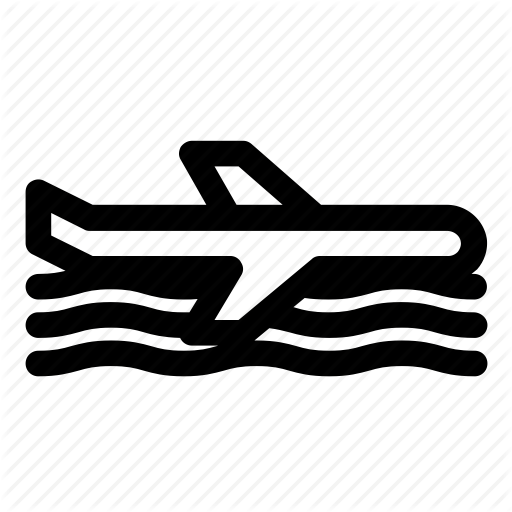

<ion-header>
  <ion-toolbar color="dark">
    <ion-buttons slot="start">
      <ion-menu-button></ion-menu-button>
    </ion-buttons>
    <ion-title>Core Detail</ion-title>
  </ion-toolbar>
</ion-header>

<ion-content>
  <app-skeleton *ngIf="!core"></app-skeleton>
  <app-previous></app-previous>
  <div id="content" *ngIf="core">
    <ion-label>
      <h1>{{ core.core_serial }}</h1>
      <p>{{ core.status }}</p>
      <p>{{ core.details }}</p>
      <p>Relative missions</p>
      <div *ngFor="let mission of coreMissionIds">
        <p id="missionLabel">{{ mission.name }}</p>
      </div>
      <p>Water landing :</p>
      <div id="waterlanding" *ngIf="waterlanding">
        
      </div>
      <div id="nowaterlanding" *ngIf="!waterlanding">
        
      </div>
    </ion-label>
  </div>
</ion-content>
